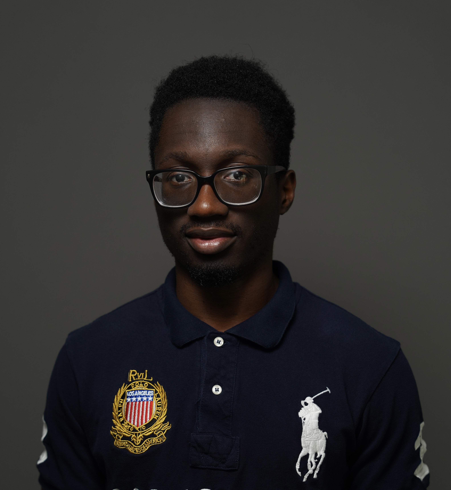

Launched this academic website as a living record of research and project work.
Electrical & Computer Engineering · Carnegie Mellon University
Ore Abolade
I'm an M.S. student in Electrical and Computer Engineering at Carnegie Mellon University, advised by Sebastian Scherer.
I work across computer vision, robotic perception, multimodal sensing, and Physical AI—with a growing focus on robotic reasoning for real-world autonomy.
View selected projects
01
Academic journey
I'm an M.S. student in Electrical and Computer Engineering at Carnegie Mellon University, advised by Sebastian Scherer. I completed my B.S. in Electrical and Computer Engineering at Carnegie Mellon University, with a minor in Artificial Intelligence.
My work began in computer vision and robotic perception, with a focus on multimodal sensing and depth estimation for robust autonomy.
More recently, my research interests have expanded toward Physical AI and robotic reasoning, with the goal of building general-purpose robots that can understand and act in real-world environments.
02
Projects & research
Research & academic work
01
Robotic Reasoning Models for Physical AI
A safety-aware approach to embodied task reasoning.Current ↗ 02Multimodal Passive Depth Perception for Autonomous Navigation
Perception research for spatial understanding and navigation.Research ↗ 03Pepper Exercise Coach
A completed socially assistive robotics project.Completed ↗ 04Simulating Learners with GPT-4 for Parsons Problems
A completed exploration of generative models in computing education.Completed ↗Selected GitHub work
A few representative engineering projects. Private work is described at a high level while it is still being developed.
03